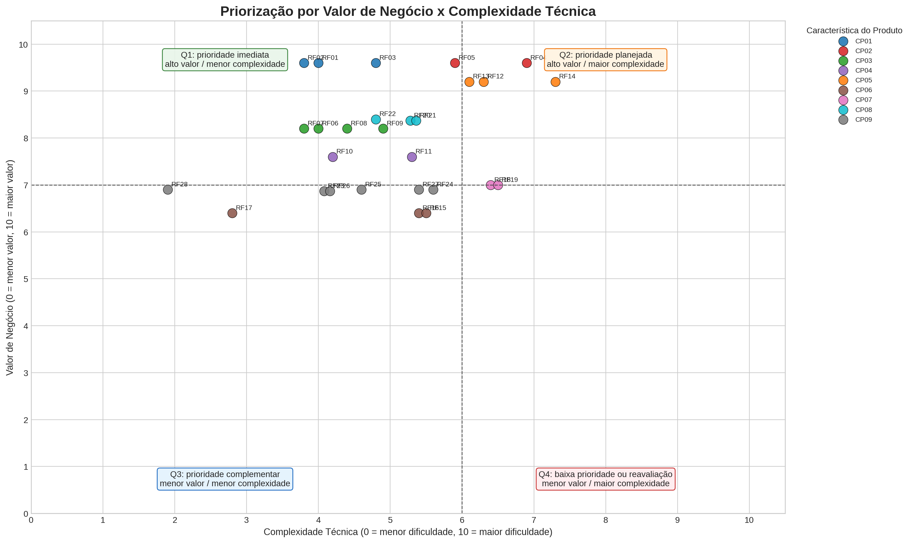

Priorização por Valor de Negócio e Complexidade Técnica¶
Esta página apresenta a priorização do backlog a partir de uma matriz quantitativa de Valor de Negócio x Complexidade Técnica. A ordem de prioridade nasce diretamente do posicionamento dos requisitos no gráfico, considerando o quadrante em que cada item aparece e, como critério secundário de desempate, o índice calculado pela própria matriz.
A abordagem mantém a rastreabilidade com a Matriz de Rastreabilidade, os Requisitos Funcionais, os Requisitos Não Funcionais e a Visão do Produto. Como cada requisito funcional está ligado a uma característica do produto, o valor de negócio do requisito é herdado da sua respectiva Característica do Produto (CP).
Regra de Valor de Negócio das Características¶
O valor de negócio foi atribuído às características do produto em escala de 0 a 10. A pontuação final resulta de uma média ponderada de quatro critérios, sendo que tais critérios foram respondidos por representantes dos stakeholders.
| Critério | Peso | Interpretação |
|---|---|---|
| Dor central atendida | 35% | Mede o quanto a característica atua sobre dores centrais do produto, como evasão, assiduidade, acolhimento, engajamento ou decisão pedagógica. |
| Impacto em stakeholders | 25% | Mede se a característica gera valor para múltiplos atores, como aprendizes, instrutores, orientadores e coordenação. |
| Frequência de uso | 20% | Mede se a característica tende a ser usada de forma recorrente na rotina do produto. |
| Diferencial/MVP | 20% | Mede se a característica é estratégica para o MVP ou para demonstrar o diferencial do produto. |
Fórmula utilizada: Valor de Negócio da CP = (Dor Central × 0,35) + (Impacto em Stakeholders × 0,25) + (Frequência de Uso × 0,20) + (Diferencial/MVP × 0,20).
| CP | Característica do Produto | OE | Dor Central (0-10) | Impacto em Stakeholders (0-10) | Frequência de Uso (0-10) | Diferencial/MVP (0-10) | Valor de Negócio (0-10) | Justificativa |
|---|---|---|---|---|---|---|---|---|
| CP01 | Gestão de Frequência | OE01 | 10 | 9 | 10 | 9 | 9.6 | Frequência é entrada básica para acompanhar assiduidade e permanência dos aprendizes. |
| CP02 | Monitoramento de Risco de Evasão e Intervenção Pedagógica | OE01 | 10 | 10 | 8 | 10 | 9.6 | Atua diretamente na prevenção de evasão e no registro de intervenções pedagógicas. |
| CP03 | Gestão de Desafios e Atividades Formativas | OE02 | 8 | 8 | 9 | 8 | 8.2 | Sustenta evidências de aprendizagem, participação e acompanhamento formativo. |
| CP04 | Reconhecimento, Evolução e Engajamento | OE02 | 7 | 8 | 8 | 8 | 7.6 | Apoia motivação, progresso e percepção de evolução do aprendiz. |
| CP05 | Canal de Escuta e Relatos | OE03 | 10 | 9 | 7 | 10 | 9.2 | Permite acolhimento e identificação de situações sensíveis que exigem intervenção. |
| CP06 | Comunicação Direta e Comunicados | OE03 | 6 | 7 | 8 | 5 | 6.4 | Melhora a comunicação institucional, mas é menos diferencial que escuta, permanência e indicadores. |
| CP07 | Avaliação de Desempenho 360 Graus | OE04 | 7 | 8 | 5 | 8 | 7 | Gera avaliação formativa ampla, embora com menor frequência de uso cotidiano. |
| CP08 | Painéis e Relatórios Educacionais | OE04 | 9 | 9 | 6 | 9 | 8.4 | Apoia decisão pedagógica, gestão por indicadores e acompanhamento institucional. |
| CP09 | Administração de Usuários, Turmas e Estágios | OE05 | 6 | 8 | 9 | 5 | 6.9 | Viabiliza a operação do sistema, mas não representa o principal diferencial pedagógico. |
| CP10 | Qualidade, Segurança, Privacidade e Sustentação Técnica | OE06 | 9 | 9 | 5 | 9 | 8.2 | Garante confiança, privacidade, segurança e viabilidade operacional da plataforma. |
Regra de Complexidade Técnica dos Requisitos¶
A complexidade técnica foi calculada para cada requisito funcional em escala de 0 a 10. Cada critério também recebe uma nota de 0 a 10, e a nota final é uma média ponderada. Esse modelo torna a análise mais prática para o grupo, pois cada item pode ser avaliado com uma escala comum e mais familiar.
| Critério | Peso | Interpretação |
|---|---|---|
| Interface/CRUD | 20% | Indica necessidade de tela, formulário, cadastro, edição ou ação operacional direta. |
| Regra de negócio | 25% | Indica existência de validações, regras pedagógicas, vínculos ou lógica além de uma consulta simples. |
| Dados sensíveis/perfis | 20% | Indica tratamento de perfis, permissões, relatos, avaliações ou dados com maior cuidado de privacidade. |
| Consulta/processamento/relatório | 25% | Indica necessidade de filtros, agregações, cálculo, histórico, dashboard, relatório ou exportação. |
| Tempo real/integração | 10% | Indica necessidade de comunicação instantânea, atualização em tempo real ou integração técnica mais complexa. |
Fórmula utilizada: Complexidade Técnica do Requisito = (Interface/CRUD × 0,20) + (Regra de Negócio × 0,25) + (Dados Sensíveis/Perfis × 0,20) + (Consulta/Processamento/Relatório × 0,25) + (Tempo Real/Integração × 0,10).
Regra de Priorização Derivada do Gráfico¶
A priorização é derivada diretamente dos quadrantes do gráfico. O corte adotado considera valor alto quando o requisito possui valor de negócio maior ou igual a 7,0, e complexidade alta quando possui complexidade técnica maior ou igual a 6,0.
| Ordem | Quadrante | Critério | Decisão de Priorização |
|---|---|---|---|
| 1 | Q1 — Prioridade imediata | Valor ≥ 7,0 e Complexidade < 6,0 | Deve ser priorizado primeiro, pois entrega alto valor com menor esforço relativo. |
| 2 | Q2 — Prioridade planejada | Valor ≥ 7,0 e Complexidade ≥ 6,0 | Deve ser planejado em incrementos, pois é estratégico, mas tecnicamente mais difícil. |
| 3 | Q3 — Prioridade complementar | Valor < 7,0 e Complexidade < 6,0 | Pode ser implementado como complemento, suporte operacional ou melhoria de experiência. |
| 4 | Q4 — Baixa prioridade ou reavaliação | Valor < 7,0 e Complexidade ≥ 6,0 | Deve ser simplificado, adiado ou reavaliado, pois exige esforço alto para o valor atual. |
Quando dois requisitos aparecem no mesmo quadrante, o desempate utiliza o Índice da Matriz, calculado pela fórmula Valor de Negócio - (Complexidade Técnica × 0,35). Esse índice apenas ordena itens dentro do mesmo quadrante; portanto, a priorização continua sendo resultado do próprio gráfico.
Resultado Calculado por Requisito¶
| Prioridade | RF | CP | Requisito Funcional | Valor de Negócio (0-10) | Interface/CRUD (0-10) | Regra de Negócio (0-10) | Dados Sensíveis/Perfis (0-10) | Consulta/Processamento/Relatório (0-10) | Tempo Real/Integração (0-10) | Complexidade Técnica (0-10) | Índice da Matriz | Quadrante |
|---|---|---|---|---|---|---|---|---|---|---|---|---|
| 1 | RF02 | CP01 | Consultar histórico de frequência | 9.6 | 5 | 3 | 2 | 6 | 1 | 3.8 | 8.27 | Q1 — Prioridade imediata |
| 2 | RF01 | CP01 | Registrar frequência diária | 9.6 | 6 | 7 | 2 | 2 | 1 | 4 | 8.2 | Q1 — Prioridade imediata |
| 3 | RF03 | CP01 | Calcular indicadores de assiduidade | 9.6 | 3 | 7 | 2 | 8 | 1 | 4.8 | 7.92 | Q1 — Prioridade imediata |
| 4 | RF05 | CP02 | Registrar ações de intervenção pedagógica | 9.6 | 6 | 8 | 8 | 4 | 1 | 5.9 | 7.54 | Q1 — Prioridade imediata |
| 5 | RF07 | CP03 | Consultar desafios e atividades atribuídas | 8.2 | 5 | 3 | 2 | 6 | 1 | 3.8 | 6.87 | Q1 — Prioridade imediata |
| 6 | RF06 | CP03 | Cadastrar desafios e atividades formativas | 8.2 | 6 | 6 | 2 | 3 | 1 | 4 | 6.8 | Q1 — Prioridade imediata |
| 7 | RF22 | CP08 | Exportar relatórios educacionais gerenciais | 8.4 | 5 | 4 | 4 | 7 | 2 | 4.8 | 6.72 | Q1 — Prioridade imediata |
| 8 | RF08 | CP03 | Registrar entrega de desafios e atividades | 8.2 | 6 | 6 | 3 | 4 | 1 | 4.4 | 6.66 | Q1 — Prioridade imediata |
| 9 | RF20 | CP08 | Consultar painel de indicadores educacionais | 8.4 | 6 | 5 | 4 | 8 | 1 | 5.4 | 6.51 | Q1 — Prioridade imediata |
| 10 | RF21 | CP08 | Gerar relatórios educacionais | 8.4 | 4 | 7 | 4 | 8 | 1 | 5.4 | 6.51 | Q1 — Prioridade imediata |
| 11 | RF09 | CP03 | Avaliar entregas de desafios e atividades | 8.2 | 6 | 7 | 3 | 5 | 1 | 4.9 | 6.48 | Q1 — Prioridade imediata |
| 12 | RF10 | CP04 | Consultar conquistas e evolução | 7.6 | 5 | 4 | 2 | 7 | 1 | 4.2 | 6.13 | Q1 — Prioridade imediata |
| 13 | RF11 | CP04 | Gerar indicadores de engajamento | 7.6 | 3 | 8 | 3 | 8 | 1 | 5.3 | 5.74 | Q1 — Prioridade imediata |
| 14 | RF04 | CP02 | Identificar padrões de risco de evasão | 9.6 | 3 | 9 | 8 | 9 | 2 | 6.9 | 7.18 | Q2 — Prioridade planejada |
| 15 | RF13 | CP05 | Consultar relatos recebidos | 9.2 | 5 | 5 | 10 | 7 | 1 | 6.1 | 7.06 | Q2 — Prioridade planejada |
| 16 | RF12 | CP05 | Registrar relatos do aprendiz | 9.2 | 6 | 8 | 10 | 4 | 1 | 6.3 | 6.99 | Q2 — Prioridade planejada |
| 17 | RF14 | CP05 | Categorizar relatos do aprendiz | 9.2 | 6 | 8 | 10 | 8 | 1 | 7.3 | 6.64 | Q2 — Prioridade planejada |
| 18 | RF18 | CP07 | Registrar avaliação de desempenho 360 graus | 7 | 7 | 8 | 8 | 5 | 1 | 6.4 | 4.76 | Q2 — Prioridade planejada |
| 19 | RF19 | CP07 | Gerar relatório de avaliação 360 graus | 7 | 4 | 8 | 8 | 8 | 1 | 6.5 | 4.72 | Q2 — Prioridade planejada |
| 20 | RF28 | CP09 | Consultar seção de dúvidas frequentes e orientações de uso | 6.9 | 3 | 2 | 1 | 2 | 1 | 1.9 | 6.24 | Q3 — Prioridade complementar |
| 21 | RF23 | CP09 | Cadastrar perfil de usuário | 6.9 | 6 | 4 | 7 | 2 | 1 | 4.2 | 5.43 | Q3 — Prioridade complementar |
| 22 | RF26 | CP09 | Cadastrar turmas e estágios de aprendizagem | 6.9 | 6 | 6 | 3 | 3 | 1 | 4.2 | 5.43 | Q3 — Prioridade complementar |
| 23 | RF17 | CP06 | Publicar comunicados | 6.4 | 5 | 3 | 2 | 2 | 1 | 2.8 | 5.42 | Q3 — Prioridade complementar |
| 24 | RF25 | CP09 | Autenticar usuário na plataforma | 6.9 | 5 | 5 | 8 | 2 | 2 | 4.6 | 5.29 | Q3 — Prioridade complementar |
| 25 | RF27 | CP09 | Vincular aprendiz a turmas e estágios de aprendizagem | 6.9 | 6 | 7 | 7 | 4 | 1 | 5.4 | 5.01 | Q3 — Prioridade complementar |
| 26 | RF24 | CP09 | Gerenciar perfil de usuário | 6.9 | 7 | 7 | 8 | 3 | 1 | 5.6 | 4.94 | Q3 — Prioridade complementar |
| 27 | RF16 | CP06 | Consultar histórico de mensagens do canal direto | 6.4 | 5 | 4 | 7 | 7 | 2 | 5.4 | 4.51 | Q3 — Prioridade complementar |
| 28 | RF15 | CP06 | Enviar mensagem instantânea em canal de comunicação direto | 6.4 | 7 | 4 | 7 | 3 | 9 | 5.5 | 4.48 | Q3 — Prioridade complementar |
Gráfico de Priorização¶
O gráfico posiciona cada requisito funcional conforme seu valor de negócio, herdado da característica de produto, e sua complexidade técnica, calculada pelos critérios objetivos apresentados. A escala final de 0 a 10, com médias ponderadas e uma casa decimal, aumenta a separação visual entre os pontos e reduz a concentração excessiva de requisitos no mesmo lugar.

Síntese por Quadrante¶
| Quadrante | RF |
|---|---|
| Q1 — Prioridade imediata | RF02, RF01, RF03, RF05, RF07, RF06, RF22, RF08, RF20, RF21, RF09, RF10, RF11 |
| Q2 — Prioridade planejada | RF04, RF13, RF12, RF14, RF18, RF19 |
| Q3 — Prioridade complementar | RF28, RF23, RF26, RF17, RF25, RF27, RF24, RF16, RF15 |
| Q4 — Baixa prioridade | --- |
Histórico de versões¶
| Versão | Data | Descrição |
|---|---|---|
| 1.0 | 18/05 | Versão inicial do documento |